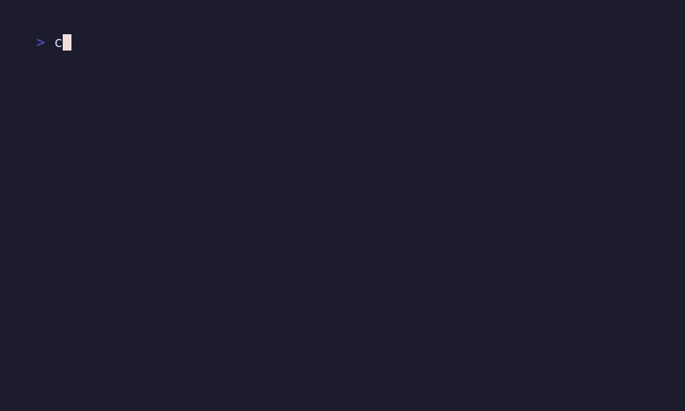
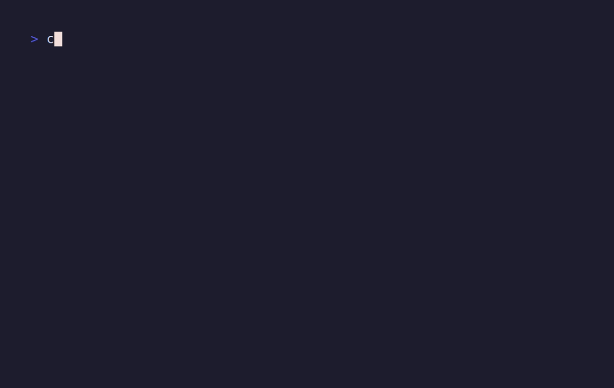

One command
Use jgrep for JSON, newline-delimited JSON, YAML, and YAML multi-document input.
A native Rust CLI for filtering JSON, NDJSON, and YAML with jq expressions. Search files, pipe structured logs, query manifests, or inspect data interactively before printing results.
$ kubectl get deploy checkout -o yaml \
| jgrep '.spec.template.spec.containers[].image'
"registry.example/checkout:1.7.4"
$ jgrep -r 'select(.level == "ERROR")' ./logs
{"level":"ERROR","message":"payment declined"}Use jgrep for JSON, newline-delimited JSON, YAML, and YAML multi-document input.
Run field projections, select(...), array iteration, interpolation, and other jq-style expressions through jaq.
Search directories for .json, .yaml, and .yml files with deterministic output and grep-style exit codes.
Use -p address.city and -w status=active when a full jq expression is more than you need.
jgrep explore shows inferred fields, live preview output, generated jq, completion, history, and save/export shortcuts.
Install a single binary or build from source with Cargo. No runtime VM is required.
jgrep 'select(.age >= 18) | .name' users.ndjson
jgrep -w status=active -p name users.ndjsonjgrep '.metadata.name' service.yaml
jgrep -r 'select(.kind == "Deployment")' k8s/jgrep explore config.yaml
jgrep explore --filter status=active logs.ndjsonjgrep -C -w log.level=ERROR logs.ndjson
jgrep --color-level --color-level-field app.level app.ndjsonTerminal demos are checked in as VHS tape files so recordings stay reproducible. The rendered GIFs below are generated from the same sources.
mkdir -p demos/out
vhs demos/tapes/quickstart.tape
vhs demos/tapes/yaml-and-recursive.tape
vhs demos/tapes/shortcuts-and-slurp.tape
vhs demos/tapes/explorer-snapshot.tape
vhs demos/tapes/streaming-highlight.tape
vhs demos/tapes/explore-tui-streaming.tape
# In containers without Chromium sandbox support:
VHS_NO_SANDBOX=1 vhs demos/tapes/quickstart.tapeField extraction and jq filtering over NDJSON.

Kubernetes manifests, YAML paths, and directory search.

-w, -p, filter files, and JSON array output.
Deterministic schema preview plus shell completion output.
Simulated kubectl logs -f input with log-level colors.
Streaming JSON logs feed the interactive explorer while a filter is typed.
Download Linux x64 or macOS binaries from the release page, or build the Rust workspace locally.
Current source builds target the Rust workspace only.
git clone https://github.com/subnix-work/jgrep.git
cd jgrep
cargo build --release -p jgrep
./target/release/jgrep '.name' file.json